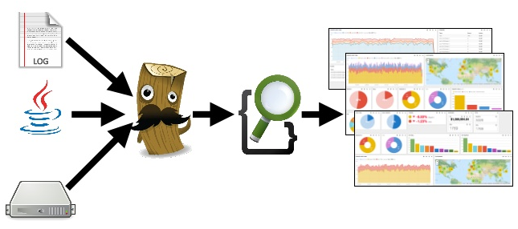

Maxence POUTORD
# Java?
java -version
# Download
curl -L -O https://download.elastic.co/elasticsearch/elasticsearch/elasticsearch-1.7.5.tar.gz
tar -xvf elasticsearch-1.7.5.tar.gz
cd cd elasticsearch-1.7.5/bin
# Let's get it started!
./bin/elasticsearch
| SGBD | Elasticsearch |
|---|---|
| Base | Index |
| Table | Type |
| Tuple/Enregistrement | Document |
| Champs | Field |
| Schema | Mapping |
http://host:port/[index]/[type]/[_action|id]
Exemples:
# Recherche des occurences "elastic" sur tous les types de contenus
GET http://localhost:9200/contenus/_search?q=elastic
# Recherche des articles commençant par "elastic"
GET http://localhost:9200/contenus/article/_search?q=elastic*
# Recherche des occurences correspondantes à peu près à "elstic"
GET http://localhost:9200/contenus/article/_search?q=elstic*
# Recherche sur une propriété
GET http://localhost:9200/contenus/article/_search?q=publie:true
## Combo !
GET http://localhost:9200/contenus/_search?q=elastic&publie:true
GET http://localhost:9200/contenus/article,interview/_search?q=elastic
GET http://localhost:9200/contenus/_search?q=elas~&publie:true&from:10&size:30
Query : chaque argument va impacter le score.
Ex : je recherche un article qui a pour titre "bim" et qui a dans son corps "bam"
Filter : va éliminer des résultats.
Ex : l'article doit être publié, la date de création doit-être entre 2014 et 2015.
POST /contenus/_search
{
"query": {
"query_string": {
"default_field": "_all",
"query": "elastic~"
}
},
"filter": {
"bool": {
"must": [{
"term": {
"publie": 1
}
}, {
"range": {
"dateDebutPublication": {
"lte": "now"
}
}
}, {
"nested": {
"path": "auteur",
"query": {
"term": {
"nom": "POUTORD"
}
}
}
}
]
}
},
"from": 0,
"size": 50,
"sort": [],
"aggs": {}
}
fos_elastica:
clients:
default: { host: localhost, port: 9200 }
indexes:
contenus:
types:
article:
mappings:
titre: ~
corps: ~
publie: ~
slug: ~
utilisateur:
type: "nested"
properties:
nom: ~
prenom: ~
persistence:
driver: orm
model: LP\ArticleBundle\Entity\Article
provider: ~
listener: ~
finder: ~
Et voilà !
use Elastica\Request as ElasticaRequest;
//...
$userQuery = "bob";
$client = $this->container->get('fos_elastica.client');
$query = array(
'query' => array(
'query_string' => array(
'query' => $userQuery,
)
),
'from' => '6', //optional (default 0)
'size' => '5' //optional (default 10)
);
$results = $client->request('/myIndex/_search', ElasticaRequest::GET, $query);
$results->getData();
$queryString = new \Elastica\Query\QueryString('test*');
$searchQuery = new \Elastica\Query();
$searchQuery->setQuery($queryString);
$publishFilter = new \Elastica\Filter\Term();
$publishFilter->addParam("publie", true);
$boolFilter = new \Elastica\Filter\Bool();
$boolFilter->addMust($publishFilter);
$searchQuery->setPostFilter($boolFilter);
$searchQuery->setFrom(0);
$searchQuery->setSize(50);
$resultSet = $type->search($searchQuery);
Méthodologie :
Documentation faiblarde ?
Lisez les tests !
Activer CORS :
config/elasticsearch.yml > http.cors.enabled=true.
Avantage :
Inconvénients :
Elasticsearch - Logstash - Kibana
